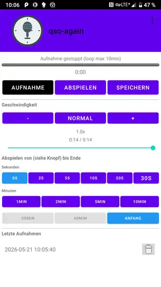
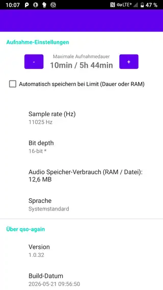

QSO Again
صوت وفيديو وموسيقى
QSO Again is an Android app for recording and playing back amateur radio QSOs (radio conversations). Features: - Record audio with microphone - Playback recordings - Manage recording files - Background recording with notification - Audioloop: Infinite audio recording in RAM (no intermediate storage
✓ ترخيص مفتوح (GPL-3.0-only) · آخر تحديث: 2026-07-18
1.0.2الإصدار
4.7 MBالحجم
GPL-3.0-onlyالرخصة
Open in Kanzتحميل APK (4.7 MB)
Download APK
SHA-256: 01e3125e2b547c8881edf10429d67fa9f1df9009c3d57167024c8ddf444d6d29


امسح الكود لفتح صفحة التطبيق
Scan to open this app page
لو كنز مش متثبت عندك: نزّل متجر كنز.
Not installed? Get the Kanz store.